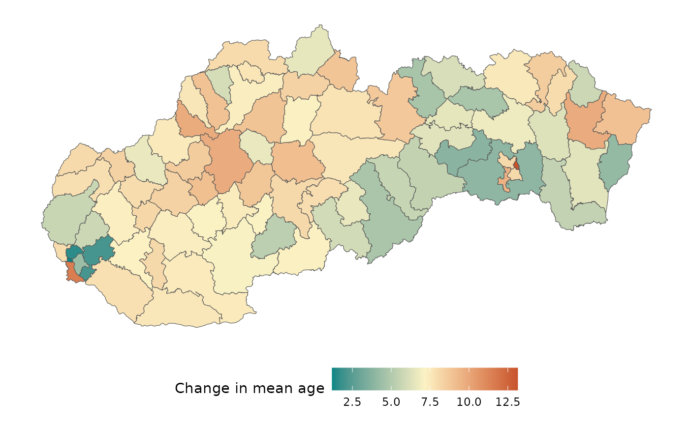
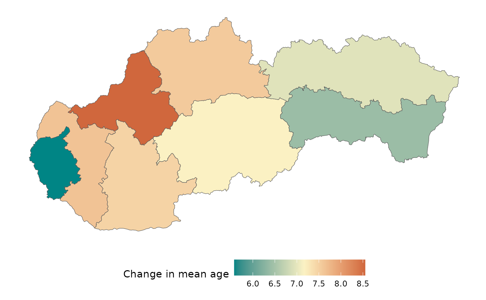
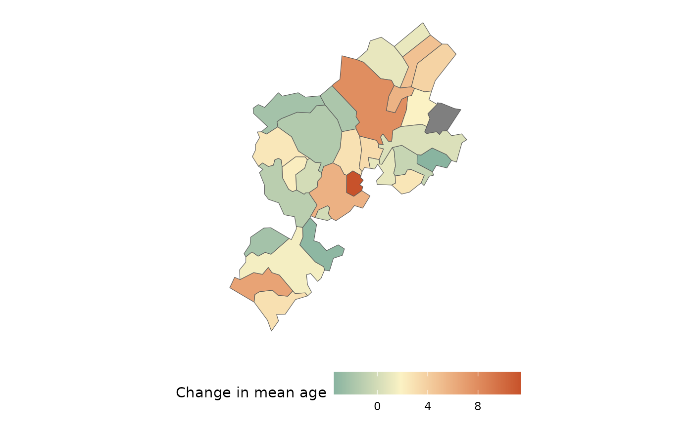

using_geocode_parameter.Rmd
library(susR)
library(dplyr)
#>
#> Attaching package: 'dplyr'
#> The following objects are masked from 'package:stats':
#>
#> filter, lag
#> The following objects are masked from 'package:base':
#>
#> intersect, setdiff, setequal, union
library(ggplot2)
library(stringr)
library(tidyr)
library(purrr)
library(sf)
#> Linking to GEOS 3.12.1, GDAL 3.8.4, PROJ 9.4.0; sf_use_s2() is TRUEIn this vignette, we demonstrate how to use the new
geocode functionality in the susR package,
specifically in fetch_susr_data() function. This feature
adds geometry to the results of an API call, allowing users to create
spatial visualizations directly from the dataset.
Additionally, we can now use “wrappers” for regional selection,
including districts, NUTS2,
NUTS3, country, lau1, and more.
These wrappers simplify selecting different levels of administrative
regions, making spatial analysis more flexible.
params_districts <- list(
"om7005rr", # table code
list(
"Districts", # vector of district codes
c(1996, 2023), # years
"IN010089", # mean age
"SPOLU" # sex: SPOLU = Total
)
)
params_NUTS3 <- list(
"om7005rr", # table code
list(
"NUTS3", # vector of district codes
c(1996, 2023), # years
"IN010089", # mean age
"SPOLU" # sex: SPOLU = Total
)
)We first fetch the data for districts, utilizing the
geocode parameter to include spatial information.
res <- fetch_susr_data(params_districts, geocode = TRUE)
cleaned_age_df <- res[["om7005rr"]] |>
rename( # renaming to more user-friendly names
district = om7005rr_vuc,
year = om7005rr_obd,
mean_age = value,
sex = om7005rr_poh
) |>
select(district, year, sex, mean_age, geometry) |>
pivot_wider(values_from = mean_age,
names_from = year) |>
mutate(diff = `2023` - `1996`) |>
select(-`1996`,
-`2023`,
-sex) |>
st_as_sf()The following map illustrates the change in mean age across districts over the selected years.
midp <- mean(cleaned_age_df$diff)
cleaned_age_df |>
ggplot() +
geom_sf(mapping = aes(fill = diff)) +
scale_fill_gradient2(name = "Change in mean age",
low = "#008585",
mid = "#fbf2c4",
high = "#c7522b",
midpoint = midp) +
theme_minimal() +
theme(
panel.grid.major = element_blank(),
axis.text = element_blank(),
legend.position = "bottom",
legend.key.width = unit(1, 'cm')
)
We repeat the process for a higher regional level (NUTS3).
res <- fetch_susr_data(params_NUTS3, geocode = TRUE)
cleaned_age_df <- res[["om7005rr"]] |>
rename( # renaming to more user-friendly names
region = om7005rr_vuc,
year = om7005rr_obd,
mean_age = value,
sex = om7005rr_poh
) |>
select(region, year, sex, mean_age, geometry) |>
pivot_wider(values_from = mean_age,
names_from = year) |>
mutate(diff = `2023` - `1996`) |>
select(-`1996`,
-`2023`,
-sex) |>
st_as_sf()Similarly, the following map displays the change in mean age at the NUTS3 level.
midp <- mean(cleaned_age_df$diff)
cleaned_age_df |>
ggplot() +
geom_sf(mapping = aes(fill = diff)) +
scale_fill_gradient2(name = "Change in mean age",
low = "#008585",
mid = "#fbf2c4",
high = "#c7522b",
midpoint = midp) +
theme_minimal() +
theme(
panel.grid.major = element_blank(),
axis.text = element_blank(),
legend.position = "bottom",
legend.key.width = unit(1, 'cm')
)
We now perform the same process for the smallest available regional level—municipalities. Due to the high granularity, we recommend filtering the dataset to include only relevant records for your analysis. This method is not (yet) optimized for handling a large volume records.
If you require data for all municipalities in Slovakia, consider
using the giscoR
package with the gisco_get_communes() or
gisco_get_lau() functions. These functions allow you to
retrieve geospatial data, which you can then manually join with the
results from fetch_susr_data().
mun_res <- susr_dimension_values("om7052rr",
"om7052rr_obc") |>
filter(str_detect(element_value, "SK0108")) |>
mutate(code = substr(element_value, nchar(element_value) - 5, nchar(element_value)))
params_mun <- list(
"om7052rr", # table code
list(
mun_res$element_value, # vector of district codes
c(1996, 2023), # years
"IN010089", # mean age
"SPOLU" # sex: Spolu = Total
)
)
res <- fetch_susr_data(params_mun, geocode = TRUE)
cleaned_age_df <- res[["om7052rr"]] |>
filter(code %in% mun_res$code) |>
rename( # renaming to more user-friendly names
region = om7052rr_obc,
year = om7052rr_obd,
mean_age = value,
sex = om7052rr_poh
) |>
select(region, year, sex, mean_age, geometry) |>
pivot_wider(values_from = mean_age,
names_from = year) |>
mutate(diff = `2023` - `1996`) |>
select(-`1996`,
-`2023`,
-sex)|>
st_as_sf()Similarly, the following map displays the change in mean age at the NUTS3 level.
midp <- mean(cleaned_age_df$diff, na.rm = TRUE)
cleaned_age_df |>
ggplot() +
geom_sf(mapping = aes(fill = diff)) +
scale_fill_gradient2(name = "Change in mean age",
low = "#008585",
mid = "#fbf2c4",
high = "#c7522b",
midpoint = midp) +
theme_minimal() +
theme(
panel.grid.major = element_blank(),
axis.text = element_blank(),
legend.position = "bottom",
legend.key.width = unit(1, 'cm')
)
The geocode parameter in fetch_susr_data()
enables users to retrieve spatial information and create insightful
maps. This functionality is valuable for analyzing regional trends and
making data-driven decisions based on spatial patterns.